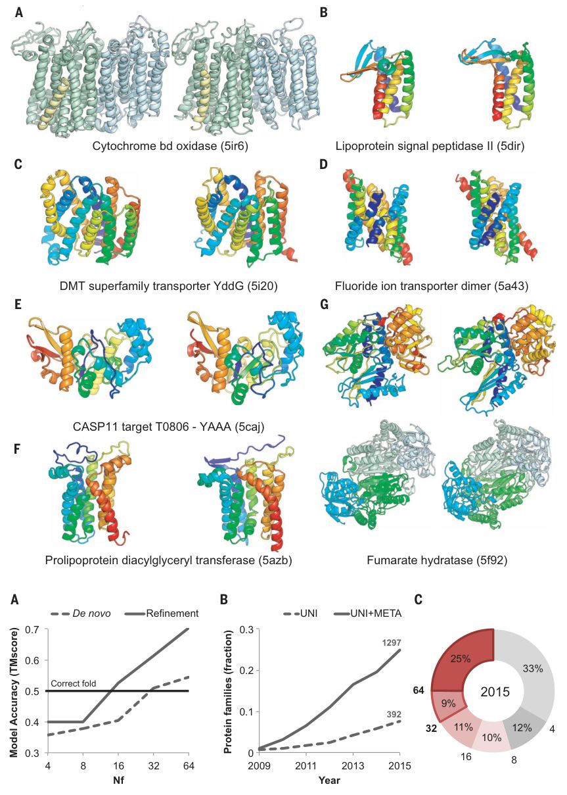
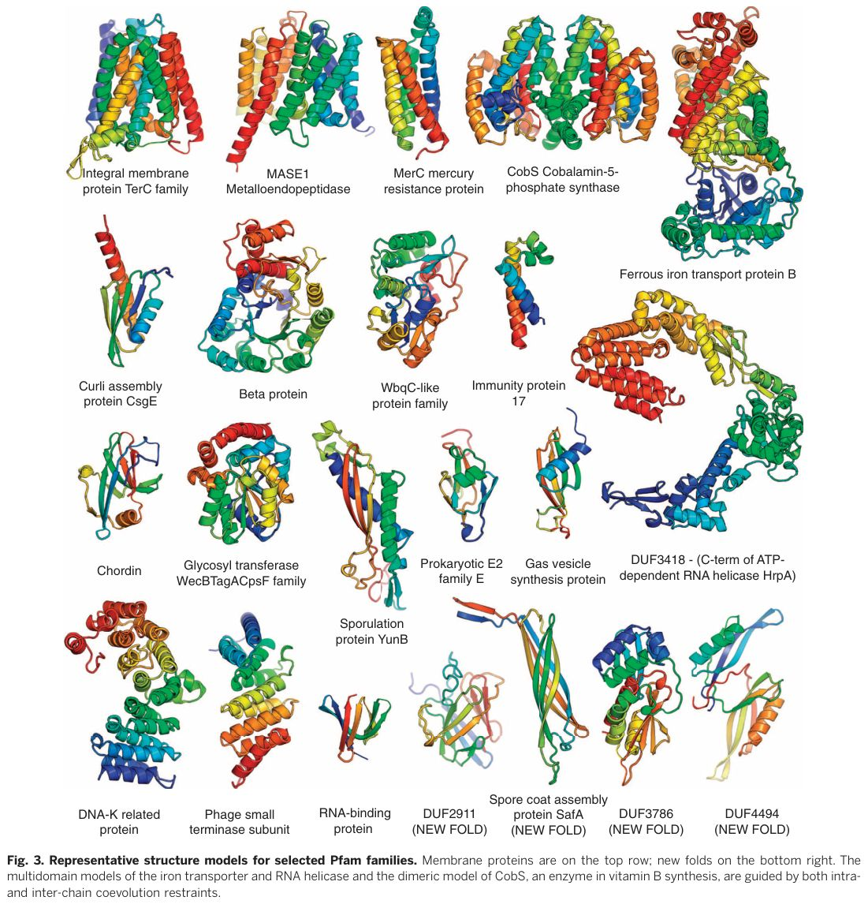

Protein structure determination using metagenome sequence data
Abstract
Despite decades of work by structural biologists, there are still ~5200 protein families with unknown structure outside the range of comparative modeling. We show that Rosetta structure prediction guided by residue-residue contacts inferred from evolutionary information can accurately model proteins that belong to large families and that metagenome sequence data more than triple the number of protein families with sufficient sequences for accurate modeling. We then integrate metagenome data, contact-based structure matching, and Rosetta structure calculations to generate models for 614 protein families with currently unknown structures; 206 are membrane proteins and 137 have folds not represented in the Protein Data Bank. This approach provides the representative models for large protein families originally envisioned as the goal of the Protein Structure Initiative at a fraction of the cost.
T here are 14,849 protein families in the Pfam (1) database with 50 or more residues, of which 4752 have at least one member with experimentally determined x-ray crystal or nuclear magnetic resonance (NMR) structure, and an additional 3984, for which reliable comparative models can be built on the basis of homologs of known structure detected using the powerful HHsearch fold-recognition program (2). There are an additional 902 for which lessconfident comparative models can be built, but no structural information available for 5211 of the remaining 6113 families (HHsearch E-value ≥ 1). Until recently, computational methods could not generate accurate models for these 5211 families, as they lack homologs of known structure for comparative modeling, and the very large number of conformations accessible to a polypeptide chain made the sampling problem in de novo protein structure prediction intractable for all but the smallest proteins. The original goal of the Protein Structure Initiative was to determine structures for at least one representative of such families, but this proved to be extremely challenging, and the focus of the initiative shifted to targets of immediate biological interest (3).
The increase in the number of known amino acid sequences has enabled the accurate prediction of residue-residue contacts by using evolu-tionary data (4-10)-substitutions at positions close in space in the three-dimensional structure covary. Such contact predictions have been used for a wide range of protein modeling efforts (11)(12)(13)(14)(15)(16)(17)(18)(19)(20)(21)(22). Accurate contact prediction requires large numbers of aligned sequences so that residue-residue covariance is clearly distinguished from lineage effects. Although coevolution-based structure modeling has been used to generate models for individual proteins with fold-level accuracy [template modeling (TM) score ( 23) is >0.5 (5, 7, 8, 10, 11, 14-18, 21, 22)], it has not been clear whether such data, combined with structure-prediction methodology, can generate accurate models on a larger scale.
Rosetta de novo structure-prediction calculations guided by evolutionary information were recently used to generate models for 58 large protein families (21). The structures of proteins in six of these families have since been published, which provides an opportunity to assess this medium-scale prediction effort. Recently solved structures of the lipoprotein signal peptidase II (24), prolipoprotein diacylglyceryl transferase (25), fluoride ion transporter (26), cytochrome bd oxidase (27), DMT superfamily transporter YddG (28), and fumarate hydratase (29) are all very close to computational models published and publicly released well before the structures were solved (Fig. 1). In the case of the three-subunit cytochrome bd oxidase, the computational model of the 788-residue complex generated using both inter-and intra-subunit contact information was used together with experimental phase information obtained from the three heme irons and a single methionine to solve the structure. Because the phase information was weak, it was only possible to place the transmembrane helices and a subset of the side chains on the basis of the density, but the loops, connectivity, location of the CydX subunit, and registration of the amino acid sequence on many of the helices were unclear. Our Escherichia coli protein model closely overlapped with the traced helices, and Phenix-Rosetta refinement (30) of a model built for the Geobacillus thermodenitrificans protein resolved the above ambiguities, enabling rapid completion of structure determination. The final deposited structure is very similar to our previously published model of the E. coli protein (Fig. 1A) [TM-align score (23) of 0.8]. The power of Rosetta structure-prediction calculations coupled with coevolution data for soluble proteins is illustrated by an extremely accurate blind de novo prediction for a complex protein structure in the CASP11 structure-prediction experiment (31) (Fig. 1E). In all of the cases shown in Fig. 1, standard threading or fold-recognition methods fail to identify the correct fold. Taken together, these data show that Rosetta modeling guided by coevolutionary constraints generates accurate models (in all six cases, the TM-align score is >0.7; the models also illustrate some of the limitations of the approach, including the lack of explicit modeling of ligands, cofactors, and lipids) (see supplementary text).

Structure models with the accuracy of those in Fig. 1 would have broad utility for framing biological hypotheses about function and inter-preting mutational data, as well as for guiding experimental structure determination. To determine the number of aligned sequences required for contact prediction accuracy sufficient to guide generation of accurate 3D models, we carried out Rosetta structure-prediction calculations for a benchmark set of 27 large protein families (table S1) with known structure. We used both the full sequence alignments and alignments of subsets of the sequences for contact prediction. We also performed structure-prediction calculations using Rosetta to hybridize and refine (32) partial structural matches identified by matching predicted contacts with the contact patterns of known protein structures. To do this, we developed an algorithm (map_align) [see the supplementary materials (SM)] that uses iterative double-dynamic programming (33). The two approaches are complementary: De novo structure prediction (using only sequence information) (34) can succeed where there are no related structures in the Protein Data Bank (PDB), whereas making use of matches to known structures can help for large complex proteins that otherwise present a convergence challenge for de novo structure prediction (structural matches can occur in the absence of detectable sequence similarity because structural similarity is retained over larger evolutionary distances). For large sequence families, combining de novo structure-prediction models and map_align structure matches using the Rosetta iterative hybridization protocol improved accuracy in 14 cases and decreased accuracy in only one (solid line in Fig. 2A) (fig. S1; see SM). Contact prediction accuracy, and hence predicted structure accuracy, depends on the number of sequences in the family, the diversity of these sequences, and the length of the protein. A measure that incorporates all three factors [N f , the 0.3 0.4 0.5 0.6 0.7 4 8 16 32 64 Model Accuracy (TMscore) Nf De novo Refinement 0 0.1 0.2 0.3 2009 2011 2013 2015 Protein families (fraction) Year UNI UNI+META A B C Correct fold 33% 12% 10% 11% 9% 25% 64 32 8 4 16 2015 392 1297 Fig. 2. Metagenome data greatly increased fraction of structures that can be accurately modeled. (A) Dependence of coevolution guided Rosetta structure-prediction accuracy on the effective number of sequences N f (a function of both sequence number and diversity; see methods definition) in the protein family. For each of 27 proteins of known structure, the multiple sequence alignment was subsampled, and residue-residue contacts were predicted by using GREMLIN. Rosetta structure-prediction calculations were then used to generate ~20,000 models, and a single model was selected on the basis of the Rosetta energy and the fit to the coevolution constraints; the average TM score of these selected models over all 27 cases is shown on the y axis (dashed line). Hybridization-based refinement of the top 20 models together with the top 10 map_align-based models for each case increases the average accuracy (solid line); models with fold-level accuracy (TM score of >0.5) are obtained for N f ≥ 16, and models with accuracy typical of comparative modeling, for N f of 64. (B) Fraction of protein families of unknown structure with at least 64 N f . Dashed line: including only sequences in UniRef100 database; solid line: including sequences in UniRef100 database together with metagenome sequence data from the Joint Genome Institute (37). (C) Distribution of N f values for 5211 Pfam families with currently unknown structure, after the addition of metagenomic sequences; 25% of the protein families have N f > 64, 34% have N f > 32, and 45% have N f > 16. RESEARCH | REPORT Downloaded from https://www.science.org at Massachusetts Institute of Technology on July 26, 2026 number of sequence clusters at an 80% sequence identity-clustering threshold divided by the square root of the protein length (21)] correlates well with contact prediction accuracy (21) and model accuracy (Fig. 2A and fig. S1) over a broad range of families.
How many protein families with currently unknown structure have N f values in the range where accurate models can be built? The models in Fig. 1 were all generated for families with N f > 64; accuracy falls off for lower values of N f (Fig. 2A). As shown in Fig. 2B, fewer than 8% of families have N f values of 64 or better. Modeling the remaining 92% of families of unknown structure at reasonable accuracy is not currently possible by using the sequence information in the UniRef100 database (35).
This limitation in structure modeling can be largely overcome by taking advantage of progress in a completely different research area. Meta-genome sequencing projects, in which complex biological samples are shotgun sequenced, have provided insights into biological communities and provide a treasure trove of new sequence data (36,37). The number of protein sequences determined in metagenome sequence projects is growing considerably faster than the UniRef100 database (solid versus dashed line in Fig. 2B). With the inclusion of metagenome sequence data, the number of sequences increases by as much as 100-fold for some families (table S2), and the fraction of families with unknown structure that can be accurately modeled using coevolutionguided structure-prediction methods increases dramatically. At N f ≥ 64, the fraction increases from 0.08 to 0.25, and at N f ≥ 32 [where fold level accuracy can be achieved (Fig. 2A)], the fraction increases from 0.16 to 0.33. To assess structure-prediction and model evaluation accuracy using metagenome data, we carried out a second set of benchmark calculations on 81 Pfam domains with recently solved structures and N f ≥ 64 (fig. S1, E and F, and table S5). Structure-prediction accuracy was correlated with the extent of convergence of the lowest energy models and the fraction of predicted contacts present in these models (figs. S1F and S2). For 42 families, the predictions converged with most of the predicted contacts satisfied (see SM for convergence criteria) and of these, 25 had a TM score >0.7 and 13 a TM score >0.6 [in three of the four remaining cases, NMR structures of small transmembrane proteins, our models fit the predicted contacts much better, and in the last case, an intertwined dimer, our monomer model contained all the correct contacts (fig. S13)].
We generated coevolution based contact predictions using GREMLIN (4, 12) for the 1297 protein families with N f ≥ 64 and built models for the 921 protein families (1024 domains) with many contacts between positions separated by more than five residues along the linear sequence (number of long range contacts > half the number of residues in protein). The structure-prediction calculations converged on models with predicted TM scores (based on the benchmark calculations) greater than 0.65 for 614 of the 1024 domains. A list of the Pfam families covered by these models is in table S3; the models are available at http://gremlin.bakerlab.org/meta/, along with an interactive 3D interface powered by 3Dmol.js (38) and D3.js (39) for visualization of coevolution contacts on the models. These structures provide close templates for comparative modeling of 487,306 UniRef100 and 3,868,268 Integrated Microbial Genomes metagenomic unique (less than 80% pairwise identity) sequences.
The converged models for the 614 Pfam families (table S3) provide a view of the hitherto unseen protein universe. To determine whether the models belong to known protein folds, we carried out structure-structure comparisons against the Structural Classification of Proteins (SCOP) (40) domain database. For 477 of the families, the models matched a protein of known structure over nearly the entire length and, hence, can be assigned to SCOP folds (52 distinct all alpha, 29 alpha/beta, 51 alpha+beta, and 28 all-beta folds). In a number of cases, the SCOP classi-fications are consistent with previous functional information; for example, the restriction endonuclease Xho I is assigned to the restriction enzyme fold, and a family of prokaryotic putative ubiquitin-like proteins is assigned the beta-grasp fold (to which ubiquitin belongs). For 137 of the domains, there were no significant structure matches of the models to the PDB (TM-align score < 0.5), and hence, these have new folds. Space limitations preclude showing here even a small number of the 614 models; instead, we show a small selection of the 3D structures in Fig. 3. They include the key developmental regulator Chordin; a key enzyme in cobalbumin synthesis; a metalloendopeptidase; and mercury and iron transporters. Six are transmembrane proteins, four have new folds, and several have complex topologies. These and the remaining 590 structure models not shown in Fig. 3 should provide a basis for understanding molecular function and mechanisms and should guide experimental structure determination (such efforts should be informed of the limitations of the modeling approach described in the supplementary text). While this manuscript was in preparation, crystal structures of members of 5 of the 614 families were published and are similar to the corresponding models (TM-align score ≥ 0.7) (see fig. S3 and table S4).

The models presented in this paper fill in about 12% of the structural information missing for known protein families. That this could be accomplished using computational modeling methods was not at all apparent 5 years ago. This progress required integration of advances in disparate research areas: metagenome sequencing, coevolutionary analysis, and de novo protein structure-prediction methodology. This combined approach has a bright future: Extrapolating from the data in Fig. 2B suggests that in several years the majority of families will have sufficient number of sequences for accurate structure modeling. A current limitation is that most sequence data are for prokaryotes, but as fungal and other simple eukaryote genome structure prediction sequencing projects ramp up, the approach should become applicable to eukaryote specific protein families.
22. June 2016; accepted 22 November 2016 10.1126/science.aah4043 Protein structure determination using metagenome sequence data Sergey Ovchinnikov, Hahnbeom Park, Neha Varghese, Po-Ssu Huang, Georgios A. Pavlopoulos, David E. Kim, Hetunandan Kamisetty, Nikos C. Kyrpides, and David Baker Science 355 (6322), . DOI: 10.1126/science.aah4043
References
- Finn R. Nucleic Acids Res 2016
- Söding J. Bioinformatics 2005
- Montelione G. F1000 Biol. Rep 2012
- Kamisetty H, Ovchinnikov S, Baker D. Proc. Natl. Acad. Sci. U.S.A 2013
- Morcos F. Proc. Natl. Acad. Sci. U.S.A 2011
- Nugent T, Jones D. Proc. Natl. Acad. Sci. U.S.A 2012
- Jones D, Buchan D, Cozzetto D, Pontil M. Bioinformatics 2012
- Marks D, Hopf T, Sander C. Nat. Biotechnol 2012
- D. T. Jones, D. W. Buchan, D. Cozzetto, M. Pontil, Bioinformatics 28 , 184 – 190 (2012)
- D. S. Marks, T. A. Hopf, C. Sander, Nat. Biotechnol. 30 , 1072 – 1080 (2012)
- Sułkowska J, Morcos F, Weigt M, Hwa T, Onuchic J. Proc. Natl. Acad. Sci. U.S.A 2012
- Balakrishnan S, Kamisetty H, Carbonell J, Lee S, Langmead C. Proteins 2011
- Ekeberg M, Lövkvist C, Lan Y, Weigt M, Aurell E. Phys. Rev. E Stat. Nonlin. Soft Matter Phys 2013
- S. Wickles et al ., eLife 3 , e03035 (2014)
- Tian P. J. Am. Chem. Soc 2015
- Hayat S, Sander C, Marks D, Elofsson A. Proc. Natl. Acad. Sci. U.S.A 2015
- T. A. Hopf et al ., Nat. Commun. 6 , 6077 (2015)
- Abriata L. 2015. doi:10.1101/013581
- Ovchinnikov S, Kamisetty H, Baker D. 2014
- T. A. Hopf et al ., eLife 3 , (2014). 21. S. Ovchinnikov et al ., eLife 4 , e09248 (2015)
- Antala S, Ovchinnikov S, Kamisetty H, Baker D, Dempski R. J. Biol. Chem 2015
- Zhang Y, Skolnick J. Proteins 2004
- Stockbridge R. Nature 2015
- G. Mao et al ., Nat. Commun. 7 , 10198 (2016)
- R. B. Stockbridge et al ., Nature 525 , 548 – 551 (2015)
- S. Safarian et al ., Science 352 , 583 – 586 (2016)
- H. Tsuchiya et al ., Nature 534 , 417 – 420 (2016)
- Feliciano P, Drennan C, Nonato M. Proc. Natl. Acad. Sci. U.S.A 2016
- Dimaio F. Nat. Methods 2013
- Ovchinnikov S. Proteins 2016
- Y. Song et al ., Structure 21 , 1735 – 1742 (2013)
- Taylor W. Protein Sci 1999
- K. T. Simons et al ., Proteins 34 , 82 – 95 (1999)
- Suzek B. Bioinformatics 2015
- Kunin V, Copeland A, Lapidus A, Mavromatis K, Hugenholtz P, Microbiol. Mol. Biol. Rev 2008
- Markowitz V. Nucleic Acids Res 2014
- Rego N, Koes D. Bioinformatics 2015
- Bostock M, Ogievetsky V, Heer J. IEEE Trans. Vis. Comput. Graph 2011
- Andreeva A. Nucleic Acids Res 2008